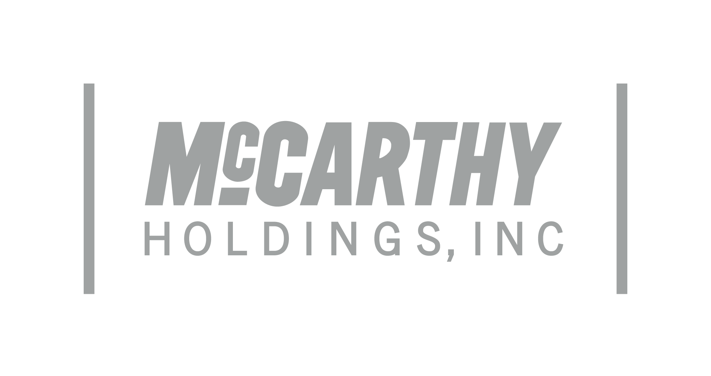

Enterprise R&D · Internal Tools
An internal communications tool I helped research and prototype as a Product Manager Intern, built for McCarthy Holdings on Palantir Foundry to explore connecting the field and the office across the business.

At the scale of a national builder, the people on job sites and the teams in the office rarely share the same tools or the same view of what's happening. Information lives in scattered threads, emails, and systems, and the gap between the field and the office slows everything down. Field Echo was an R&D effort to explore closing that gap: a prototype for a single place to keep the field and the office connected and informed.
Building the tool was one problem. Getting access to the data behind it was a bigger one. The information we needed sat behind IT and security controls, and for good reason: it included sensitive PII. Earning access was less about engineering and more about trust and clear communication.
Permissions from IT were slow and carefully gated, which made complete sense given how sensitive the data was. The right move was to respect that the company guards its data closely, not to push against it.
I communicated clearly about exactly what we needed, the scope, and the limits, and we agreed to work from static, de-identified data. That let us build and test the prototype without ever touching live PII, keeping the project moving while honoring the boundaries.
I worked as a Product Manager Intern across the McCarthy Holdings and Palantir teams, helping take Field Echo from an open problem to a working prototype.
Helped shape requirements and priorities for V1, translating company needs into a clear, buildable scope.
Worked between McCarthy stakeholders and Palantir engineers to keep the product aligned with how people actually work.
Supported migrating data into the Palantir Foundry ontology so the product was built on a clean, connected data model.
Helped take the idea from research into a working prototype the team could put in front of users and pressure-test.
Field Echo was built on Palantir Foundry, with the company's data organized into a Foundry ontology, a structured model of the real objects and relationships the business runs on. Working in that environment meant the prototype wasn't just a communication layer; it was connected to the underlying data, which is what could make a tool like this genuinely useful at scale.
Field Echo took an ambiguous internal problem and turned it into a working prototype on real enterprise infrastructure, grounded in a real data model. As a PM intern, I got to help research the need, define the scope, coordinate across McCarthy and Palantir, and shape a zero-to-one concept into something tangible the team could evaluate, which is exactly the kind of early product work I want to keep doing.